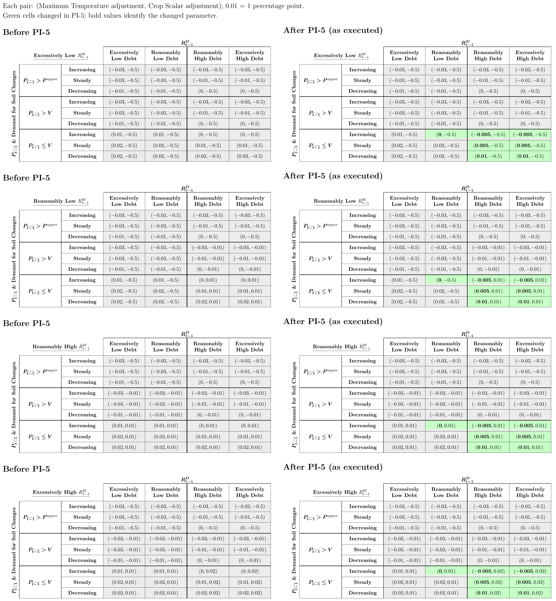

PI-5: Soil Issuance and Parameter Changes
Executed on January 2, 2025 at 06:11 UTC.
Summary
- Maximum Temperature Decimals: Upgrade the Maximum Temperature from 0 to 6 decimal precision.
- Soil Issuance Below Peg Changes: Scale Soil issuance when time-weighted average ΔP (TWAΔP) <= 0 and instantaneous ΔP (INSTΔP) <= 0 by (1 - min(L2SR, 0.99)) and set a minimum Soil issued to 1% of min(|TWAΔP|, |INSTΔP|), before rounding. ΔP measures a Pinto supply imbalance, while P denotes price.
- Soil Issuance Above Peg Changes: Change the scalar on Pods that became Harvestable at the beginning of the Season for Soil issuance above peg:
- from 0.5 to 0.25 when the Pod Rate is Excessively High.
- from 1 to 0.5 when the Pod Rate is Reasonably High.
- from 1 to 1.2 when the Pod Rate is Excessively Low, price is Excessively High, and Soil demand is increasing.
- Soil Issuance Fix When INSTΔP > 0 and TWAΔP < 0: Change Soil issuance when the inter-block MEV manipulation resistant instantaneous ΔP (INSTΔP) > 0 and TWAΔP < 0 to be 1% of |TWAΔP| scaled by:
- 0.25 when the Pod Rate is Excessively High.
- 0.5 when the Pod Rate is Reasonably High.
- 1 when the Pod Rate is Reasonably Low.
- 1.2 when the Pod Rate is Excessively Low.
- Case Adjustment Changes: Lower the Maximum Temperature adjustments in several instances when TWAΔP <= 0 (detailed below).
- Intended Crop Scalar Adjustment: PI-5 intended to increase certain Crop Scalar decreases from 1 to 2 percentage points per Season, but an encoding error left them unchanged. PI-6 implemented the correction.
- New Events: Introduce new events
SeasonMetricsandRainStatus, and addbeanstoSeasonOfPlentyWell.
Links
- Implementation Commit: fa54250b36cf4b2173dff9a4633cf98a177be8bd
Problems
1. Maximum Temperature Decimals
Maximum Temperature adjustments were limited to 100-basis-point changes, which reduced the granularity available to adjust the Maximum Temperature in each case.
2. Soil Issuance Below Peg Changes
Pinto did not factor the L2SR into its Soil issuance.
3. Soil Issuance Above Peg Changes
The protocol is willing to issue Pods every Season in order to measure changing demand for Soil, including when TWAΔP > 0, but the protocol did so at higher coefficients than this adjustment targets.
4. Soil Issuance Fix When INSTΔP > 0 and TWAΔP < 0
When issuing Soil below peg, the protocol compared INSTΔP and TWAΔP and issued the minimum of the absolute values of the two in order to minimize debt issuance. However, when INSTΔP > 0 and TWAΔP < 0, the protocol issued |TWAΔP| Soil which led to excessive debt issuance in instances where there was a large |TWAΔP| but the protocol was over its value target at the time of the gm call.
5. Case Adjustment Changes
The Maximum Temperature was likely increasing more aggressively than necessary in certain instances when TWAΔP <= 0, particularly when the Pod Rate is above its optimal level or when the Pod Rate is Reasonably Low and there is increasing demand for Soil.
6. Intended Crop Scalar Adjustment
The selected cases decreased the Crop Scalar by one percentage point per Season. PI-5 intended a two-percentage-point decrease, but its constant encoding did not implement it.
7. New Events
There was no straightforward off-chain method to get certain Flood and Season data.
Solutions
1. Maximum Temperature Decimals
- Expand the Temperature adjustment field
bTto 4 bytes inLibCasesand adjust the relevant bytes and handle decoding.
- Upcast
bTto anint32and adjust the correspondingTemperatureChangeevent.
- Omit scaling of
s.sys.weather.tempand assume 6 decimal precision by default.
- Update
LibDibblerand the Morning Auction to support decimals for Maximum Temperature.
- Scale the current Maximum Temperature by
1e6upon PI execution.
2. Soil Issuance Below Peg Changes
- Introduce a
scaleSoilBelowPegfunction inSun.solthat scales the Soil issuance below peg according to the L2SR.
- Add a new evaluation parameter
belowPegSoilL2SRScalarin storage that scales L2SR before applying the 99% cap.
- Initialize
belowPegSoilL2SRScalarto1e6so this parameter has no additional effect on Soil issuance.
- Enforce a minimum Soil issued of 1% of
min(|TWAΔP|, |INSTΔP|)when INSTΔP <= 0, before rounding. Soil issuance is zero when INSTΔP = 0.
3. Soil Issuance Above Peg Changes
- Add new evaluation parameters
soilCoefficientRelativelyHighandsoilCoefficientRelativelyLowto storage for the Reasonably High and Reasonably Low Pod Rate categories, respectively.
- Instantiate the new parameters to
0.5e18and1e18, respectively, alongside the existing coefficients, so Soil issuance above peg is scaled by:- 0.25 when the Pod Rate is Excessively High.
- 0.5 when the Pod Rate is Reasonably High.
- 1 when the Pod Rate is Reasonably Low.
- 1.2 when the Pod Rate is Excessively Low. This now includes Excessively High price with increasing Soil demand, which previously used a coefficient of 1.
4. Soil Issuance Fix When INSTΔP > 0 and TWAΔP < 0
- When
twaDeltaB < 0andinstDeltaB > 0, set the Soil supply to 1% of |TWAΔP|, scaled by:- 0.25 when the Pod Rate is Excessively High.
- 0.5 when the Pod Rate is Reasonably High.
- 1 when the Pod Rate is Reasonably Low.
- 1.2 when the Pod Rate is Excessively Low.
5. Case Adjustment Changes
Update s.sys.casesV2 with the new Maximum Temperature adjustments bolded on the right. Across all L2SR tiers with TWAΔP <= 0, change +1 to 0 percentage points for Reasonably Low Pod Rate with increasing Soil demand. For Reasonably or Excessively High Pod Rate, change +2, +1, and 0 to +1, +0.5, and −0.5 percentage points for decreasing, steady, and increasing Soil demand, respectively.


6. Intended Crop Scalar Adjustment
The intended two-percentage-point decrease applied to Reasonably Low L2SR, Reasonably High price, and Reasonably or Excessively High Pod Rate. PI-5 installed constants that still encoded a one-percentage-point decrease. PI-6 corrected the encoding.
7. New Events
- Add
beansto theSeasonOfPlentyWellevent.
- Add the
SeasonMetricsevent to keep track of various metrics each Season.
- Add the
RainStatusevent to keep track of when the protocol starts or stops Raining.
event SeasonMetrics(
uint256 indexed season,
uint256 deltaPodDemand,
uint256 lpToSupplyRatio,
uint256 podRate,
uint256 thisSowTime,
uint256 lastSowTime
);
event RainStatus(uint256 indexed season, bool raining);
Rationale
1. Maximum Temperature Decimals
Changing the Maximum Temperature by a minimum of 100 basis points does not allow the protocol to respond with a sufficiently high level of granularity. By changing the minimum change to .0001 basis points (or 0.000001%), the protocol will be well equipped to change the Maximum Temperature as it grows in complexity well into the future.
2. Soil Issuance Below Peg Changes
The protocol does not need to issue enough Soil to return the price to peg if all of it were Sown. Issuing less Soil each Season gives the market more time to respond in ways other than issuing debt (e.g., via Converts, new Deposits, etc).
When the L2SR is high and P < 1, the protocol should rely more heavily on Converts from LP tokens to Pinto to increase the price rather than issuing more debt. Scaling Soil when P < 1 by 1 - L2SR reflects this. At higher L2SR, the protocol marginally prefers sacrificing liquidity through LP → Pinto Converts than to issue additional debt. See the Beanstalk State Space for the underlying liquidity/debt framework.
A minimum of 1% of min(|TWAΔP|, |INSTΔP|) when INSTΔP <= 0 caps the effect of the (1 - L2SR) scalar at 99%, before integer rounding. Soil can still be zero when the input is zero or rounding removes the remaining amount.
3. Soil Issuance Above Peg Changes
When TWAΔP > 0, the protocol issues debt in order to measure changing demand for Soil and to avoid entering a situation where the protocol has no outstanding debt. This Soil issuance is based on the number of Pods that became Harvestable at the beginning of the Season.
However, the protocol is aiming to reduce replacement debt with respect to the amount of Soil that it issues relative to the number of Pods that became Harvestable. This solution allows for greater granularity with respect to the ratio of how much Soil is issued relative to how many Pods became Harvestable, and lowers the ratio in two Pod Rate categories to reduce replacement debt. Applying 1.2 to the previously excluded case makes all Excessively Low Pod Rate cases use the same coefficient.
4. Soil Issuance Fix When INSTΔP > 0 and TWAΔP < 0
Issuing |TWAΔP| Soil when INSTΔP > 0 and TWAΔP < 0 does not achieve the goal of minimizing Soil issuance when INSTΔP > 0. Instead, when INSTΔP > 0, the protocol should take a similar approach to how it issues Soil when TWAΔP > 0, (i.e., issue enough Soil to measure changing demand).
However, because in this scenario no Pods became Harvestable at the beginning of the Season, the Soil issuance mechanic when TWAΔP > 0 cannot be used. By instead issuing 1% of | TWAΔP | scaled according to the same coefficients based on the Pod Rate when TWAΔP > 0, the protocol is able to issue enough Soil to measure demand while factoring in the Pod Rate and limiting additional debt issuance.
5. Case Adjustment Changes
If the protocol increases the Maximum Temperature too quickly, it can disincentivize prospective lenders to lend to the protocol by creating a greater potential benefit for them to lend to the protocol later on. By leveraging the new Maximum Temperature decimal precision to increase the Maximum Temperature more conservatively, the protocol can minimize the incentive to wait to lend to the protocol and decrease the overall rate at which the Maximum Temperature increases which will likely enable the protocol to more sustainably issue debt over time.
6. Intended Crop Scalar Adjustment
The intended faster decrease would favor LP over Pinto exposure in the selected cases. PI-5 did not realize that adjustment because its encoded constants were unchanged. The correction belongs to PI-6.
7. New Events
The added metrics and Rain transitions allow off-chain consumers to reconstruct Season state, while the added beans field records the number of Pinto minted to each Well during a Flood.
Contract Changes
Initialization
InitPI5.init() at 0x78a9b261e59dd31d2f50230103d07e3e65bbe02b initialized the Soil scalars and Pod Rate coefficients, installed the V2 case table, and multiplied the stored Maximum Temperature by 1e6 to preserve its value at six-decimal precision.
Facet Changes
| Facet | Action | Previous Implementation | New Implementation |
SeasonFacet | Replace | 0x15cBDFaF5715F2a1B6e23b3ef7c4D67843a6C836 | 0xFC52fC3C8a29F74603006fF03915770014D9F049 |
FieldFacet | Replace | 0x0Ab2b647Fdfaa3Abffca2a10fe78Eb0dED438fAf | 0x8906b9131B7c6354f3e14b8656B546CfCfc9eDF1 |
GaugeGettersFacet | Replace | 0x34eaa05624E0B8cFAB251571E429fD88Cec7ec12 | 0x04912D77F69Bd03f8846A432B0AbacfC028bea33 |
SeasonGettersFacet | Replace | 0x995E1cA9Bd858bff94448dCC0E097bd4d564e74B | 0xFA0093b9CA5D00c9E6623767eb09489d90aBF150 |
SeasonGettersFacet | Add | Not applicable — new selectors | 0xFA0093b9CA5D00c9E6623767eb09489d90aBF150 |
ConvertGettersFacet | Replace | 0xb70708268fff1b6038dEf6F7d29a3bEe037e901c | 0x115E83Bcb217A06D13210009e7CD8b44cE1af509 |
SiloGettersFacet | Replace | 0x6aBFE707418D80a6E06b77853ED6c098B8aF6711 | 0x6C1dc649E93be43FfF670a2407Fa4Edc4996BB95 |
Other Contract / Parameter Changes
Maximum Temperature storage and case adjustments moved from whole percentage points to six decimal places. The initializer rescaled existing Temperature without changing its economic value.
Initialized belowPegSoilL2SRScalar to 1e6 (1) and abovePegDeltaBSoilScalar to 0.01e6 (1%). Above-target Soil coefficients changed from 0.5 to 0.25 for Excessively High Pod Rate and from 1 to 0.5 for Reasonably High Pod Rate. Reasonably Low remained 1 and the configured Excessively Low coefficient remained 1.2, as set by PI-3.
External Library Deployments
All seven linked libraries were redeployed. LibEvaluate, LibWellMinting, and LibFlood changed their own source files. LibGauge, LibIncentive, LibShipping, and LibGerminate did not. FieldFacet, GaugeGettersFacet, ConvertGettersFacet, and SiloGettersFacet have no externally linked libraries. GaugeGettersFacet, ConvertGettersFacet, and SiloGettersFacet retained their own source files and getter interfaces despite their replacement.
| Library | Previous Implementation | New Implementation | Used By |
|---|---|---|---|
LibEvaluate | 0x595eb8aa763325235f988eedc582d74046fd7bca | 0x69c7d1feb4b963ff9b8338a765c13bb5c3b19792 | SeasonFacet |
LibGauge | 0xe7e55a27a369bef6d20dd081ff7ddff90d6f7482 | 0x07b75f35e90eb114035d3c67ac7738f11fb70a26 | SeasonFacet |
LibIncentive | 0xfe1fe5508b33401c20e45fcd10161783de443479 | 0x4e5dae995c2e8eef23b44a95034064262326e703 | SeasonFacet |
LibShipping | 0x86c9bdf4b2a7ab22c90048f0d741b81c546895b7 | 0x6ccdfc6fd7885a07e5d4ee5e998a66afe6a65705 | SeasonFacet |
LibWellMinting | 0x4e81e73a1ca24ff99a79914a887d13b9c641e2f2 | 0xd972df7cfd286778951aa829a40e9ab7f7db1d5a | SeasonFacet, SeasonGettersFacet |
LibFlood | 0x249ae0deb8f7ebccaa574c7396c7d099d87e7e3d | 0x0b316cb760a677ed1c581041c7d2118bc66aa87c | SeasonFacet |
LibGerminate | 0x7c748262b168e85a5e0973021e44b163fcb578d9 | 0x636234f909174c764d216ef9bd22175f01a107b2 | SeasonFacet |
Function Changes
- Updated
LibCasesencoding/decoding,Weather.updateTemperature(), andLibDibblercalculations to use six-decimal Temperature precision.FieldFacet.maxTemperature()returns the stored scaled value.totalSoil()uses that value in above-peg Morning scaling without multiplying it again.
- Changed
getChangeFromCaseId(uint256)to return anint32 bTinstead ofint8. Its other outputs remainmT,mL, andbL. ChangedgetAbsTemperatureChangeFromCaseId(uint256)to return the six-decimal signed Temperature adjustment asint32.
- Added
LibWellMinting.getTotalInstantaneousDeltaB()to sum instantaneousdeltaBacross whitelisted Wells, andtotalInstantaneousDeltaB()as its external getter.
- Updated
LibEvaluate.evaluateBeanstalk()andcalcCaseIdAndHandleRain()to return the evaluated state alongside the case ID, allowingstepSun()to use the computed L2SR. These are shared internal/library changes, not new diamond entry points.
- Added the internal
scaleSoilBelowPeg()helper and updatedstepSun()to issuemin(|TWAΔP|, |INSTΔP|) × (1 − min(L2SR, 0.99))when both deltas are nonpositive, subject to integer rounding.setSoil()stores the result ins.sys.soil. At INSTΔP = 0, issuance becomes zero instead of the previous |TWAΔP|.
- Added
getExtEvaluationParameters(), which returns the new Soil-scaling parameters.
- Added the internal
scaleSoilAbovePeg()helper to apply four Pod Rate coefficients. The 1.2 coefficient now also applies whencaseId % 36 = 8, which previously used 1. For positive TWAΔP,setSoilAbovePeg()scales the Soil corresponding to newly Harvestable Pods. For nonpositive TWAΔP and positive INSTΔP,stepSun()instead scales 1% of |TWAΔP|.
- Updated
LibCases.setCasesV2()with lower Temperature adjustments in the selected nonpositive-TWAΔP cases. The intended Crop Scalar constants still encoded−1e18rather than−2e18in PI-5.
Event Changes
- Changed
TemperatureChange.absChangefromint8toint32and emitted it in six-decimal Temperature units.
- Added
SeasonMetrics(season, deltaPodDemand, lpToSupplyRatio, podRate, thisSowTime, lastSowTime)to expose the state used during evaluation. The Sow-time fields reflect storage after the times are updated.
- Added
RainStatus(season, raining)when Rain starts or stops.
- Added the
beansfield toSeasonOfPlentyWell, recording Pinto minted to the Well separately from the existing number of output tokens received.